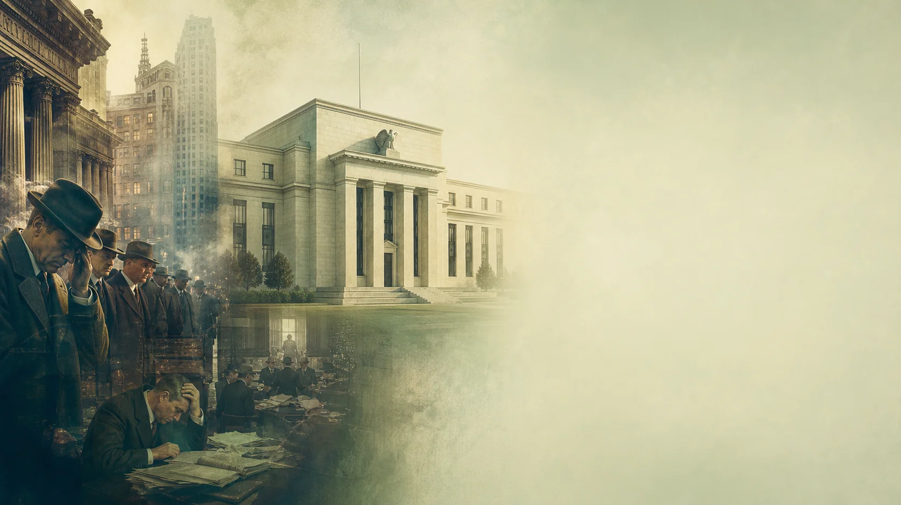

ก่อนหน้านี้สหรัฐฯ พยายามตั้งธนาคารกลาง
มาแล้วสองครั้ง แต่ก็ปล่อยให้หมดอายุไป
ไม่ใช่เพราะคนอเมริกันยุคแรกไม่รู้จักการเงิน แต่เพราะ
พวกเขาระแวงการรวมศูนย์อำนาจทางการเงินอย่างมาก
พวกเขาไม่อยากมีสถาบันถาวรแบบอังกฤษที่ควบคุมเครดิต
และเงินของทั้งประเทศจากศูนย์กลางเดียว

จนกระทั่งวิกฤติปี 1907 ถูกใช้เป็นเหตุผล
ในการผลักดันให้เกิด FED
จากความผิดพลาดของการเก็งกำไรในตลาดทองแดง
ลุกลามจนสถาบันการเงินทะยอยล้ม พวกนายธนาคาร
ให้เหตุผลว่าถ้ามีธนาคารกลาง เราจะป้องกันวิกฤติแบบนี้ได้
และในที่สุดธนาคารกลางสหรัฐฯ หรือ Federal Reserve
ก็ถูกก่อตั้งขึ้นในปี 1913